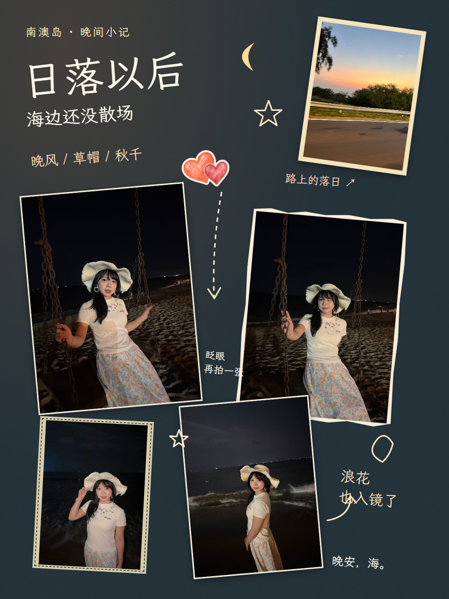

Plog · 手账式相册
照片、手写小字、纸条和涂鸦，把零碎的小事留在一起。密集一点，安静一点，都可以跟着你的照片来。

路上的落日，海边的秋千，还有一张眨眼的照片。亮色爱心与几笔星月，把夜晚的小片段连在一起。
五张照片，几句小注释，留住夜晚的不同表情。想做手账时，可以按自己的照片选择这样的表达。
“使用 $photo-book-studio，把这次出门的照片做成 Plog。”
用户授权展示 · 点击图片看大图。
制作后的本地网页预览默认带微调：移动、等比缩放、旋转照片与装饰，也能修改文字、字号、颜色与字体。可以继续通过对话修改，再按要求导出分享图片。
普通相册仍从首次问卷开始。只有你想做 Plog、手账或提供这种风格参考时，才启用这条路线。